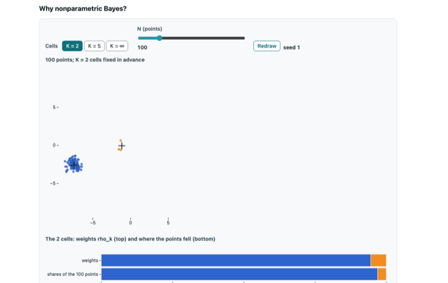

P-00 Step 6.1 · done
Why nonparametric Bayes?
A finite mixture fixes its number of cells before seeing data, while a Dirichlet process keeps unbroken stick mass for cells nobody has used yet, so the number of occupied cells can grow with N.
You do: The viewer switches between K = 2, K = 5 and K = infinity, moves N from 10 to 500, and presses Redraw (or Enter) for new weights, centres and points.
You see: A two-dimensional scatter coloured by cell with the occupied cell centres marked, and a bar of the cell weights above the shares of the N points, with a dashed 'new cells' piece of unbroken stick when K is infinite.
dp-core sampler (seeded Dirichlet, Beta(1, alpha), normal) + Observable Plot 0.6.17